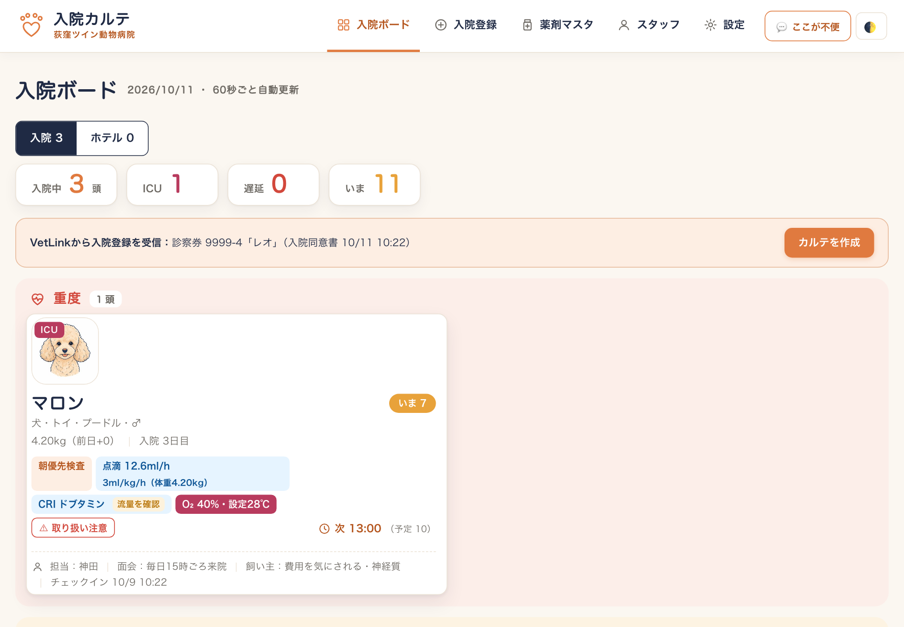

入院カルテ 使い方ガイド ← ガイド一覧へ 獣医師・動物看護師向け ｜ 2026年10月11日版 ｜ 荻窪ツイン動物病院
30秒まとめ
入院中の子の指示・バイタル・観察・点滴・投薬・食事を、「入院ボード」と「治療シート」の2画面でみんなで管理するアプリです。治療シートは8:00〜21:00 の1時間ごとの表で、マスを押すと右からパネルが出て、そのまま記録できます。記録には「誰が・何時に」が残り、やり忘れは赤い「未実施」で浮き上がります。iPad の横向きで使うのがいちばん見やすいです。
入院中の子の指示・バイタル・観察・点滴・投薬・食事を、「入院ボード」と「治療シート」の2画面でみんなで管理するアプリです。治療シートは8:00〜21:00 の1時間ごとの表で、マスを押すと右からパネルが出て、そのまま記録できます。記録には「誰が・何時に」が残り、やり忘れは赤い「未実施」で浮き上がります。iPad の横向きで使うのがいちばん見やすいです。
橙 = 受付・看護師
青 = 獣医師
緑 = 自動（システム）
1. アプリを開く
| 場所 | URL |
|---|---|
| 院内のPC・iPad | http://192.168.20.250:3500 |
| 院外（スマホなど） | https://serverpc.tail2de5bb.ts.net:8446（院の Tailscale 設定が必要） |
最初にパスコードを入力します（院内で共有しているもの。分からなければ院長へ）。一度入れると同じ端末では約30日間は再入力不要です。
夜は右上の 🌓 ボタンでダークモード（黒背景）に切り替えられます。
2. 全体の流れ
2-1. 入院から退院まで
① 入院登録
VetLink で入院同意書をもらうと自動でアプリに届きます（入院ボードの「カルテを作成」を押すだけ）。届いていない時は「入院登録」から診察券番号で登録します。
▼
② 自動：アーミックスから取込＋既定の予定
基本情報・体重・血液検査を取り込み、体温・心拍数・呼吸数の予定（朝・昼・夕）が自動で入ります。疾患別セットを選んでいれば、その中身も入ります。
▼
③ 獣医師：指示を出す
治療シート左上の「＋ 追加」から、点滴・注射・内服・処置・食事などの指示を足します。用量や流量は体重から自動計算されます。
▼
④ みんなで：治療シートに記録
予定のマスや空いているマスを押して、その場で記録します。
▼
⑤ 退院
患者名を押して出る「患者設定」から退院の処理をします。
2-2. 画面は2つだけ
| 画面 | 何を見る・何をする |
|---|---|
| 入院ボード（トップ） | 入院中の全員のカード。遅れている予定・点滴の流量・ICU の設定がひと目で分かります。 |
| 治療シート（カードを押す） | その子の1日の表。記録も指示の変更も、すべてこの画面の上で行います。血液検査・所見・申し送りは、右上のボタンで右から出るパネルで見ます（シートは見えたまま）。 |
治療シートの操作は4つだけ覚えればOKです：時刻を押す＝まとめ入力／マスを押す＝記録／項目名を押す＝指示の編集／左の色帯を押す＝その区分をたたむ。
3. 入院ボードの見方
開いた瞬間に「誰が入院していて、何が遅れていて、誰を先に診るべきか」が分かる画面です。60秒ごとに自動更新されます。

▲ 入院ボード（画面の患者はすべて架空のサンプルです）
| 表示 | 意味 |
|---|---|
| 重症度ごとの帯 | 重度／中等度／軽症の順に並びます。同じ重症度の中では遅れの多い子が上です。 |
| 遅延 2 いま 1 次 13:00 | やり忘れの数（赤）・今の時間のタスク数・次の予定時刻。赤が出ていたら最優先で対応してください。 |
| 点滴 12.6ml/h／CRI 薬剤名 | 続いている点滴。押すと、患者ページに移らずに内訳（3ml/kg/h（体重4.20kg）・CRI は用量と流量）が出ます。「流量を確認」が付いていたら体重が変わっています（7章）。 |
| O₂ 40%・設定28℃ | ICU 管理中の子の酸素濃度・設定温度。 |
| 朝：腎パネ など | 申し送りで選んだ「明日の朝の検査」。その日は「朝優先検査」の札が自動で付きます。 |
| ⚠ 取り扱い注意・面会・連絡・飼い主 | 対応時に知っておくべきこと。 |
| 上の「入院｜ホテル」 | ペットホテルでお預かり中の子は「ホテル」に分かれて並びます。 |
4. 治療シートの見方看護師獣医師

▲ 治療シート（iPad 横・架空データ）。上の1行に患者名・札・体重・日付の切り替え・血液検査/所見/申し送り
4-1. 表のつくり
- 横＝時刻：8:00〜21:00 の1時間ごとの列。記録は「時」の列に入ります（9:56 の記録は 9:00 の列。マスを押すと実際の時刻が見えます）。8:00 より前・21:00 より後は、時刻の行の右端の「＋時間外」で列を足せます（記録の無い足した列は「×」で消せます）。
- 縦＝区分：ICU設定（ICU の子だけ）→ バイタル → 観察 → 輸液 → 投薬 → 食事 → 様子・メモ。左の色帯を押すと、その区分を1行にたためます（たたんだ行に「要確認」の件数）。
- いまの線：オレンジの縦線が今の時刻です。
- 基本｜詳細：詳細にすると、呼吸音・呼吸様式・意識状態・粘膜色・血圧・SpO2 の行や、詳細の観察項目が出ます。ICU の子は最初から詳細です。
- 前日・翌日：見出しの右で日付を切り替えます。夜間管理の子は「日中｜夜間」も切り替えられます（夜間＝21:00〜翌7:00）。
- 入院目的などは1行に切り詰めています。押すと全文が出ます。
- 申し送りの帯（朝の検査・前日からの引き継ぎ・今日のポイント）が表の上に出ます。
4-2. マスの見方
| 表示 | 意味 |
|---|---|
| 予定 | これからやること。 |
| 未実施 | 予定時刻を60分過ぎても記録されていない＝要対応。 |
| 値（38.6 など） | 記録済み。基準値の外は赤い背景に「高」、青い背景に「低」。下の小さい ▲▼ は前回との差（体重は前日との差）。 |
| ✓ | 実施済み（マスを押すと時刻と記録者が見えます）。 |
5. 記録のしかた看護師
5-1. マスを押して記録する
マスを押すと右からパネルが出ます。上から 項目名と時刻 → 入力 → メモ → 記録者 →「記録」の順です。「記録」ボタンはいつも一番下に見えています。

▲ 体温のマスを押したところ。数字は専用の数字ボタンで入れます（iPad のキーボードは出ません）
- 数字は画面の数字ボタン（0〜9・小数点・1文字消す）で入れます。文字を書く項目（様子・メモなど）だけ iPad のキーボードを使います。
- 選ぶ項目（食欲1〜10・あり／なし・選択式・食べた量など）は、押して選んでから「記録」を押します（押しただけでは保存されません）。
- 記録者は1行で出ます。直前に選んだ人が最初から入っています。違うときだけ「変更」を押して選び直します。
- 時刻は今の時刻が入っています。あとから入れるときは実際にやった時刻に直します。
- パネルを開いたまま左のシートで別のマスを押すと、パネルの中身がそのマスに切り替わります（続けて入力できます）。押したマスには枠が付きます。
5-2. 時刻を押してまとめて入れる

▲ 時刻（12:00 など）を押すと、その時刻のバイタルをまとめて入れられます
- いま出ているバイタルの行がまとめて出ます。選択式の項目は「正常」が最初から選ばれています。違うときだけ変えてください。
- 「まとめて記録」で1回の記録として保存されます。
5-3. 予定と実施（体温・心拍数・呼吸数は別々）
- 体温・心拍数・呼吸数は別々の予定です。それぞれ記録して初めて実施済みになります。体温だけ記録すると、心拍数と呼吸数は「予定」「未実施」のまま残ります（測り忘れに気づけるように）。
- まとめ入力では、値を入れた項目の分だけ実施済みになります。
- 予定のあるマスに記録すると、その予定も一緒に実施済みになります。
5-4. 直す・取り消す
記録済みのマスを押すと、記録の一覧（値・時刻・記録者）が出ます。「修正」で入れ直し、「取り消す」で消せます。
6. 指示を足す・直す獣医師
6-1. 「＋ 追加」で指示を足す

▲ 左上の「＋ 追加」。区分（内服・注射・皮下補液・静脈点滴・給餌・観察・バイタル・処置）をボタンで選びます
- 薬剤マスタから選ぶと体重から投与量を自動計算します。安全域の外だと警告が出ます。「⚠未確認」の薬剤は院長がまだ用量を確認していないものです。使うときは自分でも必ず確認してください。KCL などの危険薬は赤い安全警告が出ます。
- 時間帯（朝 8:00・昼 13:00・夕 18:00）か時刻を選びます。「この日だけ」で1日だけの予定にもできます。
- バイタルは、予定にする項目（体温・心拍数・呼吸数）を選びます。同じ項目の予定がすでにあれば、そこに時間帯が足されます。
- 給餌は時間帯だけを決めます（フードと量は8章）。
- 疾患別セット（避妊去勢・歯科処置後など）を選ぶと、観察・食事・朝の検査・投薬などをまとめて足せます。セットから入った投薬・輸液・処置は「確認待ち」で入ります。項目名を押して内容を確かめ、「確定する」を押すと予定が出ます。
- 指示を出した時刻より60分以上前の今日の予定は作りません（昼に足した指示の朝の分が「未実施」にならないように）。
6-2. 項目名を押して直す・終える
- 行の項目名（薬剤名・体温など）を押すと、右のパネルで名称・用量・予定の時間帯・メモを直せます。
- 「この項目を終了」で、今日から先の未実施の予定が消えます（実施済みの記録は残ります）。
- 観察項目は「＋ 観察項目を追加」で候補から足せます。項目名から「表示しない」にしても記録は残り、「↩」で戻せます。
7. 輸液・点滴獣医師看護師
点滴は系統（メイン点滴／側管・混注／CRI（シリンジポンプ））と皮下補液で、入れる値が違います。数字の横には必ず単位が出ます。

▲ メイン点滴の項目名を押したところ。「いまの指示」に計算の内訳が出ます
| 系統 | 入れる値 | シートの表示 |
|---|---|---|
| メイン点滴 | 流量（ml/kg/h）か流量（ml/h）。どちらかを入れると、もう片方を体重から計算します。 | 項目名の横に「12.6ml/h」。押すと「3ml/kg/h × 4.20kg ＝ 12.6ml/h」 |
| CRI（シリンジポンプ） | 薬剤・用量と単位（mg/kg/h・μg/kg/h・μg/kg/分。設定画面で足せます）・希釈後の濃度（mg/ml・μg/ml）。流量（ml/h）は自動で計算。流量を入れて用量を計算することもできます。 | 用量と流量の両方（例「3μg/kg/分・0.76ml/h」） |
| 皮下補液 | 1回の量（ml）か体重あたり（ml/kg）。 | 「60ml/回」。実施の記録で実際に入れた量を直せ、指示と違うとマスの2行目に出ます |
| 側管・混注 | 用量（mg/kg）・濃度（mg/ml）＝今までどおり。 | 用量と液量 |
7-1. 流量を変えたとき

▲ 流量を変えた時刻のマスに新しい流量が太字で出て、次に変えるまで帯の中に薄く同じ値が続きます
- 項目名を押して流量（CRI は用量）を変えると、「流量を変えた時刻」と記録者の欄が出ます。記録者を選ばないと保存できません。前の変更より前の時刻にはできません。
- 太字のマスを押すと、変更前の流量・変えた人・時刻が見えます。
- 体重が変わっても ml/h は自動で変えません（ポンプに設定している値のため）。項目名の横に「流量を確認」が出ます。項目名を押すと、今の体重での ml/kg/h が見えます。ポンプはそのままでよいときは「この ml/h のまま今の体重にそろえる」で印が消えます。
- 流量の変更の記録は消せません。間違えたときは、もう一度流量を変えて直します。
8. 食事看護師
食事の区分は「食事」1行と「摂取カロリー」1行だけです。フードごとに行は増えません。中身は1回ごとにマスで選びます。
8-1. 項目名「食事」で決めておくこと

▲ 1日の目標カロリー・与える方法・いつものフード・予定の時間帯・今日食べたもの
- 1日の目標カロリー＝RER（70×体重の0.75乗）×病態係数。病態係数はここで直せます。
- 与える方法：自分で食べる／シリンジで強制給餌／経鼻・食道・胃瘻チューブ。項目名の横に出ます。
- いつものフード（任意）：フード・代謝エネルギー・1回の量。マスの入力の初期値になります。チューブのときは ml で持ちます。
- 予定の時間帯・食事の予定の終了・今日食べたもの（時刻・フード・量・kcal）もここで見られます。
8-2. マスで1回分を記録する

▲ 食事のマスを押したところ（自分で食べる）
- フード：初期値は「いつものフード」。この患者で最近使ったフード・フードマスタ・手入力からも選べます。あげた量（g）も直せます。
- 「＋もう1品」で2種類以上を記録できます。2品以上のときは出し方（混ぜて＝食べた量は全体で1つ／別皿＝フードごとに食べた量）を選びます。
- 食べた量（全量／3/4／半分／1/4／食べず）・与え方の印（温めた／ふやかした／手から・いくつでも）・メモ（カロリーに入れない）。
- 「前回と同じ」で前回のフード・量・出し方・与え方の印・与える方法が入ります（食べた量とメモは入りません）。
- チューブのときは、フード（流動食）・入れた量（ml）・前後に流した水（ml・任意）を入れます。シリンジで強制給餌のときは入れた量（ml か g）。どちらも食べた量は出ません。
| マスの表示 | 意味 |
|---|---|
| 1行目 | 食べた量（チューブ・強制給餌は入れた量）。別皿で食べた量が違うときは少ないほう。 |
| 2行目 | フード名。2種類以上は「＋1」のように数が付きます（押すと全部見えます）。 |
| kcal不明 | 代謝エネルギーが分からないフードがあった回。そのフードは摂取カロリーの合計に入りません。 |
摂取カロリーは、回ごとに「代謝エネルギー × あげた量 × 食べた割合」で積み上げます。流動食は kcal/ml で計算します（フードマスタに kcal/ml を登録）。
9. 血液検査・所見・申し送り獣医師
治療シートの見出しの右のボタンで、右からパネルが出ます（シートは見えたまま）。

▲ 血液検査。前日からの増減と、入院時は正常だったのに悪化した項目を赤帯で知らせます
- 血液検査：アーミックスから取り込んだ検査を日ごとに並べます。血糖・アルブミン・カリウムなどは太字。
- 所見：主観・レントゲン・エコーの所見を書きます。
- 申し送り：明日の朝の検査（ボタンで選ぶ・「前日と同様」も可）・明日への引き継ぎ・今日のポイント。シートの上の帯と入院ボードに出ます。
10. 入院登録・薬剤マスタ・設定獣医師
10-1. 入院登録

▲ 入院登録（架空データ）
- VetLink で入院同意書をもらった子は、入院ボードの上の帯に出ます。「カルテを作成」を押すだけです。
- 届いていない時は診察券番号を入れて登録します。苗字・品種・性別・去勢避妊・疾患別セットも選べます。
- 登録すると体温・心拍数・呼吸数の予定（朝・昼・夕）が自動で入ります。
- 患者名を押すと患者設定（重症度・ICU・夜間管理・面会/連絡・飼い主特記・この患者だけの基準値・アーミックス再取込・退院）が開きます。
10-2. 薬剤マスタ

▲ 薬剤マスタ。基準用量・安全域・濃度・用量確認の状態
10-3. 設定画面（上のメニュー「設定」）
- バイタルの基準値（猫・小型犬・大型犬）・選択式のバイタルの選択肢・朝の検査のボタン。
- CRI の用量の単位・食事の与える方法・与え方の印（足せます）。
- フードマスタ（kcal/100g・流動食の kcal/ml・CSV 取込）・疾患別セット。
11. 「ここが不便」を送る
右上の「💬 ここが不便」から、使いにくいところ・こうしてほしいことを送れます。今見ている画面の情報が自動で付くので、短い一言で大丈夫です。たいてい数日で直ります。
12. よくある質問・困ったとき
| 質問 | 答え |
|---|---|
| 夜中や早朝も使えますか？ | 使えます。記録・閲覧は24時間動きます。アーミックスからの取込（登録・再取込）だけは受付PCが動いている日中のみです。 |
| 「記録」を押しても保存できない | パネルの下に赤い文字で理由が出ます。多いのは記録者が未選択です。 |
| 体温だけ測ったのに心拍数が「未実施」になる | 正常です。体温・心拍数・呼吸数は別々の予定で、それぞれ記録して初めて実施済みになります。 |
| 点滴に「流量を確認」が出た | 計算した時から体重が変わっています。項目名を押して今の体重での ml/kg/h を確かめてください（7章）。 |
| 食事のマスに「kcal不明」が出た | そのフードの代謝エネルギーが分かりません。フードマスタに登録するか、手入力で kcal/100g（流動食は kcal/ml）を入れてください。 |
| 昼に足した指示の朝の分が出ない | 指示を出した時刻より60分以上前の今日の予定は作らない決まりです（やり忘れではないのに「未実施」にしないため）。 |
| 表示がおかしい・動かない | まず再読み込み。直らなければ院長へ。 |
⚠ 患者情報の取り扱い：この画面には患者名・飼い主さんの情報が表示されます。院外で画面を開いたまま席を離れない・画面の写真をSNS等に載せないでください。（このガイドの画像はすべて架空のサンプルです）